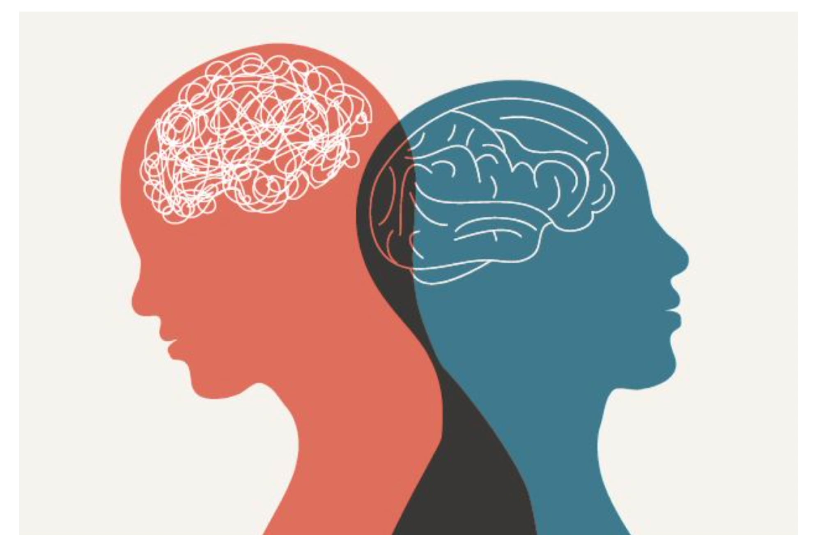

La salud mental es el estado de bienestar emocional, psicológico y social de una persona. Afecta cómo pensamos, sentimos y actuamos en la vida diaria, incluyendo cómo manejamos el estrés, nos relacionamos con los demás y tomamos decisiones. Es una parte fundamental de la salud integral y puede influir en nuestra calidad de vida, productividad y relaciones. Es fundamental para nuestro bienestar general. Afecta cómo pensamos, sentimos y actuamos en nuestra vida diaria. Mantener una buena salud mental nos ayuda a manejar el estrés, construir relaciones saludables y tomar decisiones positivas.
Articulos y guias:
El ejercicio periódico puede mejorar los síntomas de depresión o de ansiedad lo suficiente como para notar una gran diferencia. Esa gran diferencia puede impulsar otras mejoras. En el caso de la salud mental, los beneficios del ejercicio y la actividad física pueden ser duraderos solo si los haces a largo plazo.
Aquí tienes algunas ideas de actividades que puedes incorporar en tu rutina:
Prácticas y ejercicios:

Cuidar tu salud mental es un proceso continuo. Está bien pedir ayuda cuando lo necesites y tomarte el tiempo necesario para enfocarte en ti mismo.
¡Puedes hacerlo!